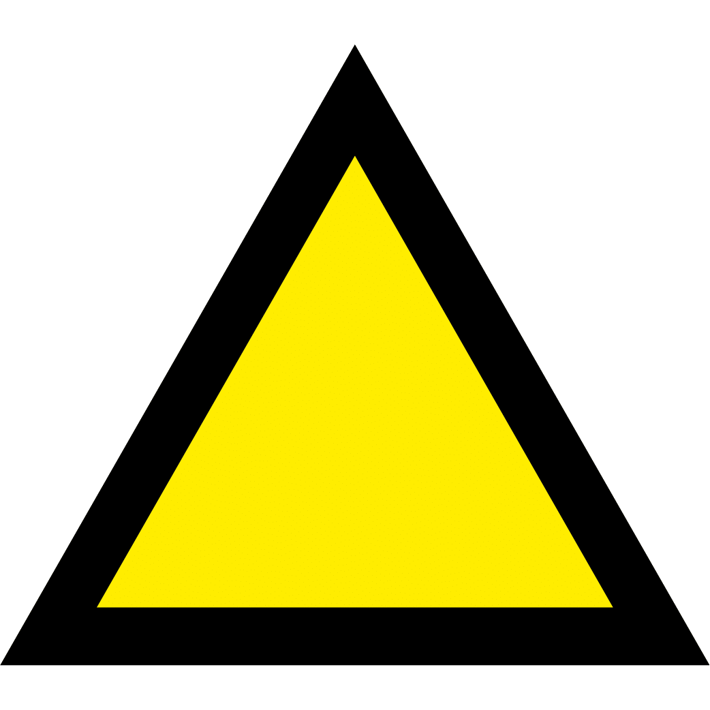
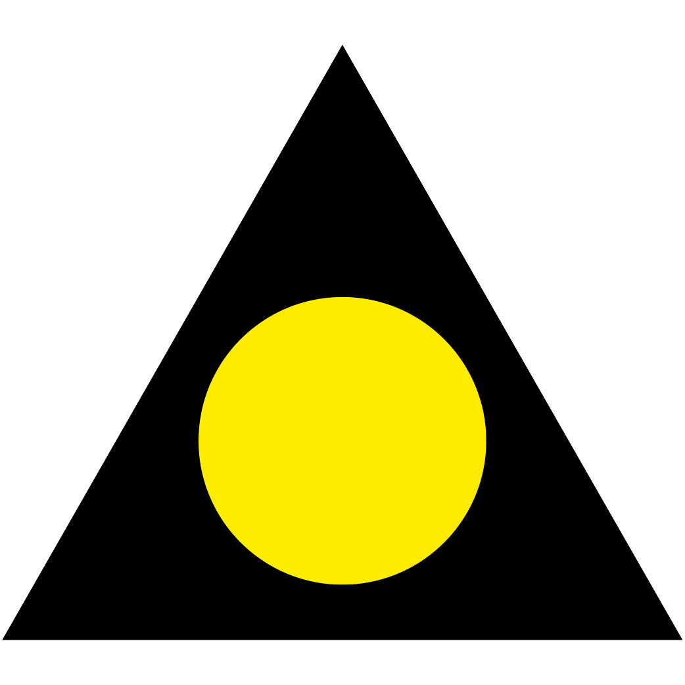

Главная
S
tory
core
S
tory
core
Первая частная школа в Казахстане образовалась в августе 1999 года на базе команды ребят 1984 года рождения, которой руководили заслуженные тренеры - Кузнецов Е. И. и Дышленко В. П.
В январе 2000 года в футбольной школе молодежи уже занимались три группы: 1984, 1985, 1986 годов.


1984

1985
1986
В июле 2000 года команда ФШМ ребят 1985 г.р. заняла третье место в чемпионате Казахстана.
В октябре 2000 года ФШМовцы 1984 года рождения под руководством заслуженного тренера Республики Казахстан - Кузнецов Е.И. - стали чемпионами республики среди своих сверстников.
В августе 2001 года введена в эксплуатацию собственная футбольная база с тремя полями различных размеров в микрорайоне “Кулагер”. введена в эксплуатацию собственная футбольная база с тремя полями различных размеров в микрорайоне “Кулагер”.
читать параграфы слева направо, снизу вверх
В марте 2001 команда ФШМ-84 становится победителем международного турнира памяти заслуженного тренера Республики Казахстан Козелько Г.А., обыграв в финале команду из г. Барнаула (Россия).
В марте 2002 года эта команда вновь выходит победителем турнира памяти Козелько Г.А.
С сентября 2002 года эта команда ФШМ из ребят 1984-1985 г. р. начинает выступать на первенстве города среди взрослых команд.
1990
1991
1992
С августа 2002 года в ФШМ функционируют группы футболистов 1992, 1991, 1990 годов рождения.
С 2003 года первенство города Алматы приобретает статус зональных игр II лиги Первенства РК. ФШМ занимает второе место.
В 2003 году “Лучшим тренером года” в Казахстане был признан тренер ФШМ Кузнецов Е. И.
Весной 2003 года взрослая команда ФШМ становится чемпионом города по системе “осень-весна”.
В 2004 году команда ФШМ выигрывает первенство Казахстана среди команд 2-й лиги, завоевывает Кубок Акима г. Алматы. Параллельно идет планомерная работа по подготовке резерва.
В 2004 году в честь 5-летнего ФШМ на стадионе “Кулагер” с 23 по 28 августа проводился международный турнир среди ребят 1993 года рождения, в котором победили юные ФШМовцы.
В 2004-2005 гг. команда ФШМ-91 становится двукратным чемпионом г.Алматы, 9 человек в составе сборной г. Алматы дважды подряд побеждают в первенстве республики.
В августе 2005 года проводится II международный турнир, посвященный 6-летию ФШМ, где победу праздновала команда “Зенит” (г. Санкт-Петербург).
В ноябре 2006 года ребята занимают третье место в международном турнире в г. Сочи среди клубов Европы и Азии, в котором принимали участие “Шахтер” (г. Донецк), “Рубин” (г. Казань).
Успешно выступают в различных турнирах команды 1991, 1992, 1993 годов рождения.
1991
1992
1993
В марте 2007 года ФШМ-91 побеждает в международном турнире памяти заслуженного тренера РК Козелько Г. А.
Полноценно функционируют группы футболистов 1994, 1995, 1996, 1997 годов рождения.
В июне 2007 года на стадионе “Кулагер” введено футбольное поле с искусственным покрытием последнего поколения.
С 2008 года по 2021 год функционировало стандартное футбольное поле с естественным травяным покрытием, по праву считавшееся одним из лучших в городе.
С июня 2021 года это натуральное поле было заменено на искусственное покрытие.
В марте 2011 года скоропостижно скончался президент ФК “ФШМ” Хасенов Радильда Сариевич - главный спонсор футбольной школы. ФШМ пришлось резко сократиться.
Остались только команды 1995 года рождения и вновь собранная команда 2001 года рождения.
1995
2001
С августа 2011 года традиционный турнир преобразуется в турнир памяти Хасенова Р. С.
ФК “ФШМ” - единственный в 2017 году клуб, который представлен командами во всех официальных турнирах города: Лига “А”, Лига “Умит”, Детско-Юношеская Лига.
В июне 2007 года на стадионе “Кулагер” введено футбольное поле с искусственным покрытием последнего поколения.
С 2008 года функционирует стандартное футбольное поле с естественным травяным покрытием, по праву считающееся одним из лучших в городе.
В марте 2011 года скоропостижно скончался президент ФК “ФШМ” Хасенов Радильда Сариевич - главный спонсор футбольной школы. ФШМ пришлось резко сократиться.
Остались только команды 1995 года рождения и вновь собранная команда 2001 года рождения.
1995
2001
С августа 2011 года традиционный турнир преобразуется в турнир памяти Хасенова Р. С.
ФК “ФШМ” - единственный в 2017 году клуб, который представлен командами во всех официальных турнирах города: Лига “А”, Лига “Умит”, Детско-Юношеская Лига.
С 2002 года по сегодняшний день идет планомерный выпуск и трудоустройство в команды мастеров выпускников ФШМ.
За клубы премьер-лиги и первой лиги выступали и выступают:
- Алиев Пиралы
- Амирсеитов Ильяс
- Аргимбаев Айдар
- Бекмухаев Ерлен
- Булаткулов Жан
- Воротников Илья
- Есжанов Алмас
- Кукеев Жамбыл
- Кукеев Жигер
- Мансуров Руслан
- Мужиков Ерлан
- Осербай Саламат
- Петухов Александр
- Розыбакиев Рахимжан
- Соболев Вячеслав
- Суюнов Даурен
- Сыгиндыков Серик
- Турысбек Бауыржан
- Хан Константин
- Перцух Юрий
- Караваев Илья
За национальную сборную РК выступали:
- Кукеев Жамбыл
- Петухов Александр
- Воротников Илья
- Турысбек Бауыржан
за молодежную сборную Казахстана:
- Воротников Илья
- Алиев Пиралы
- Алёхин Артем
- Розыбакиев Рахимжан
- Суюнов Даурен
В настоящее время в “ФШМ” функционируют восемь детско-юношеских команд, которые участвуют в первенстве города Алматы.
Тренерами этих команд являются:
- Кораблев Алексей Анатольевич
- Бекмуратов Руслан Шарибаевич
- Керимбеков Мурат Умирбекович
- Тарасов Олег Александрович
- Хасенов Агадилда Сарыулы
- Абишаев Данияр дуйсенбекович